C端 · APP · 2020
轻听英语APP
设计职责
主要负责轻听英语App的界面更新迭代，以及界面中小动画的动效设计。基于用户操作习惯的分析，从用户视角出发，提出交互优化与设计方案。 涉及内容包括：产品交互设计、图标、按钮、Banner、活动长图，以及界面排版、启动页与引导页的页面设计。
完成版本1.10-1.24的界面设计，APP品牌LOGO创意设计。
设计背景
随着互联网和智能手机的普及，英语学习类App大量涌现。英语作为全球化语言，其重要性日益凸显，会说、能听懂英语逐渐成为衡量文化水平的标准，学习人数急剧增加。
通过手机App学习英语，突破了传统课堂的限制，用户可随时随地进行名师指导、听力训练和有声阅读。轻听英语正是帮助用户在不同场合轻松练听力、提升英语能力的利器。
需求分析
- 用户分析：目标人群呈年外语市场呈年轻态，且女性需求更大的特点。
- 竞品分析：通过与几类竞品的产品定位、核心功能、页面布局、设计风格的对比，设计APP功能架构和视觉风格等，差异化设计。
- 体验地图：通过体验地图优化核心流程，寻找设计机会点。
设计思路
LOGO设计思路： 采用简约设计语言，融合“音符”“耳机”及“轻”的拼音首字母“Q”三个元素，贴合“轻听”名称，突出有声类定位与如音乐般的美好体验。主色调为绿色，传递绿色、安全、希望、清新、舒适、自然、放松的情感；点缀黑色，体现高雅与权威。
APP视觉风格： 整体配色以绿色和黑色为主，贴近用户偏好。焦点图设计偏向年轻女性用户群体。线面结合的图标样式趣味性强，符合产品调性。界面风格简约柔和、色彩艳丽，兼具趣味性与可玩度，贴合女性用户偏好。
核心设计展示


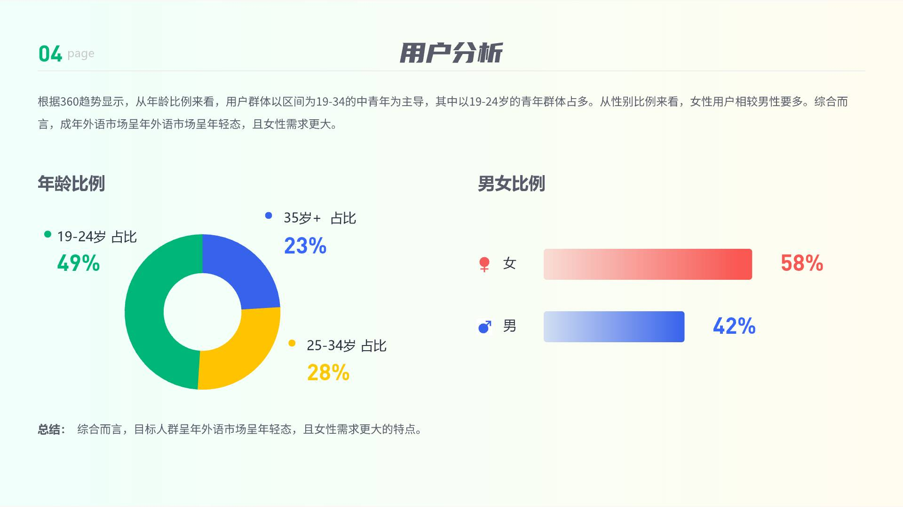
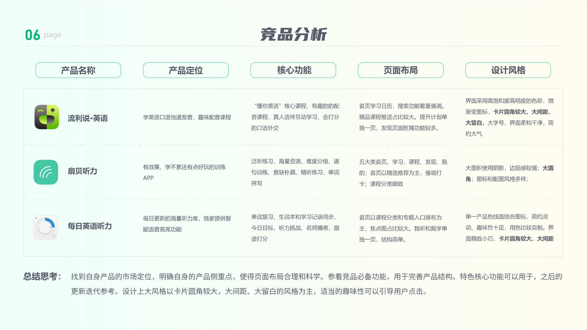

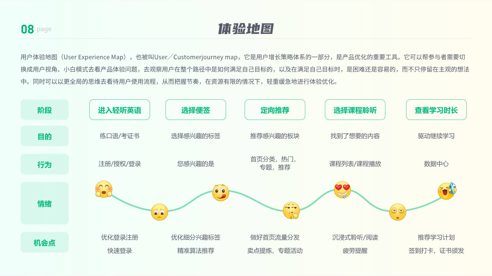

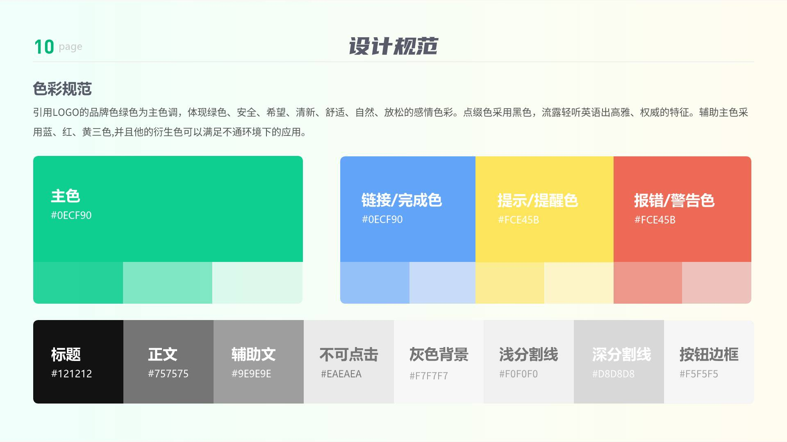
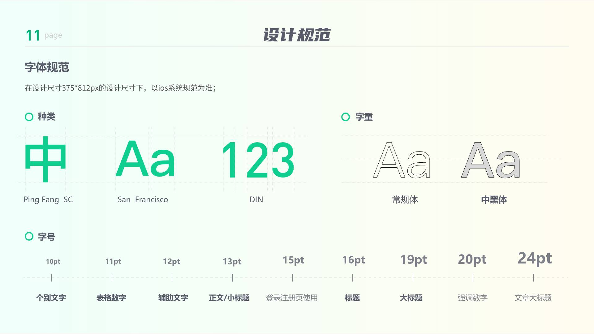
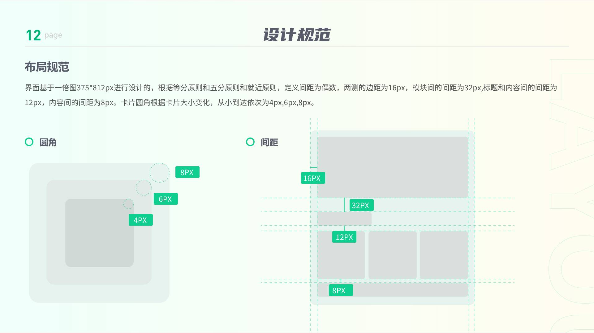
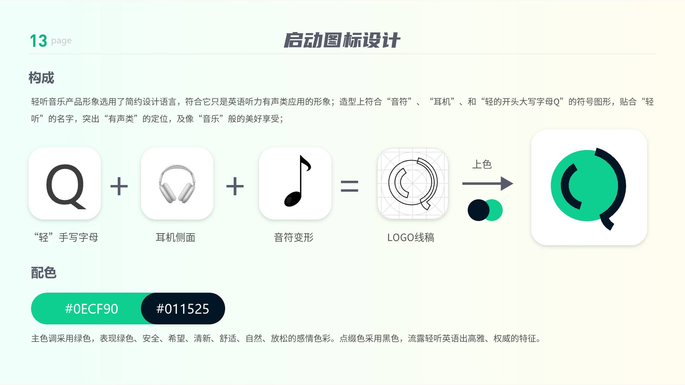
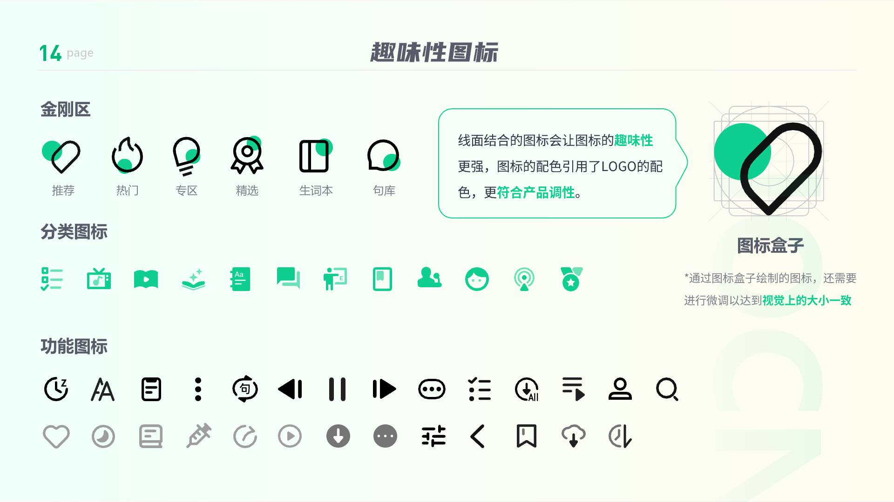
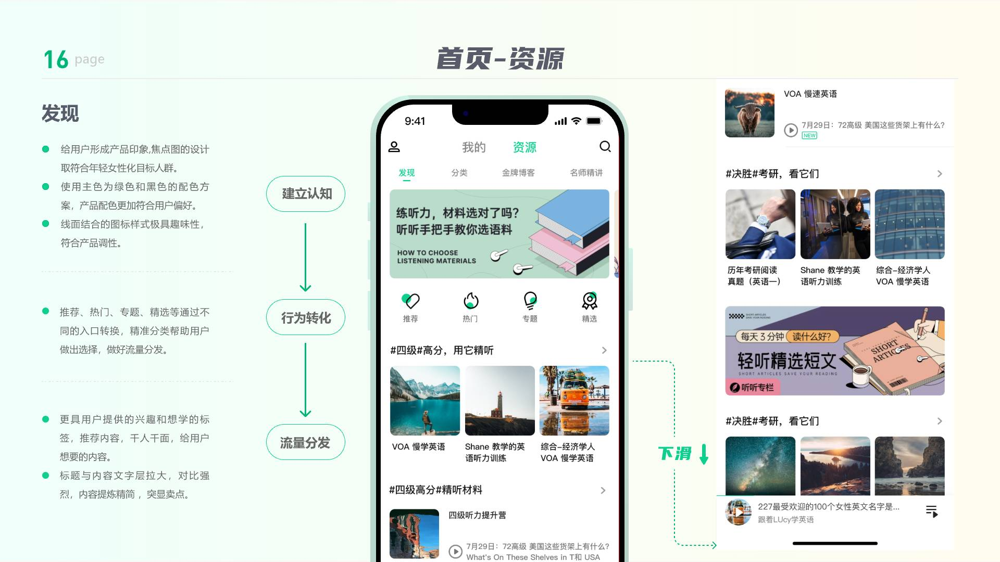
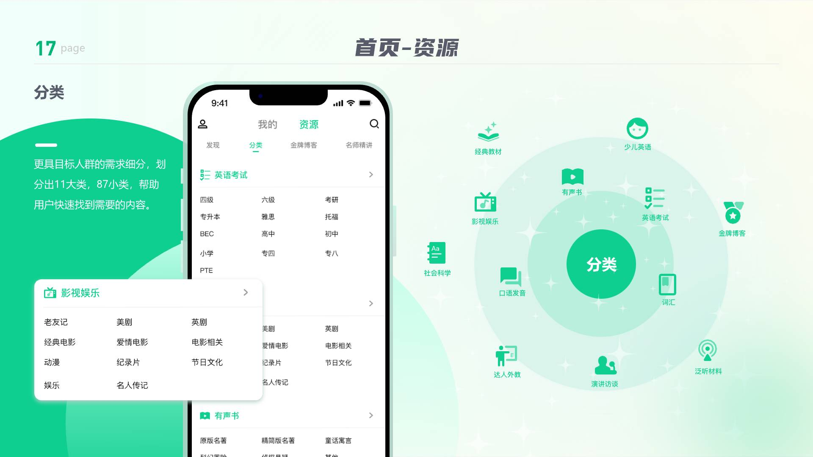
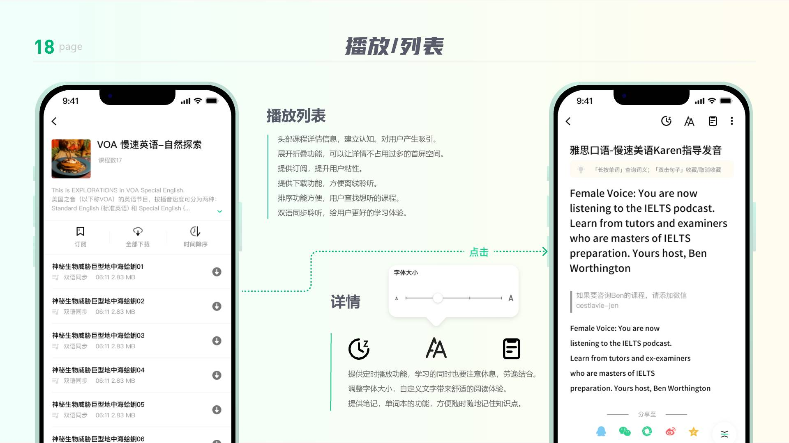
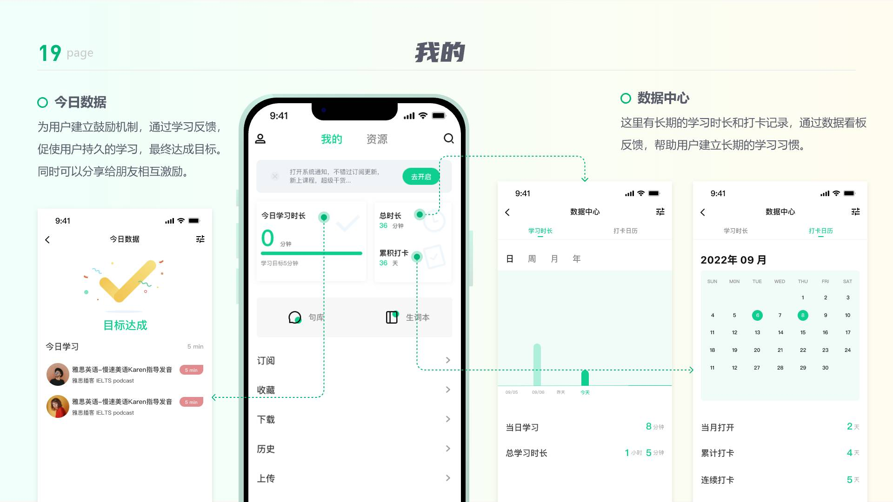